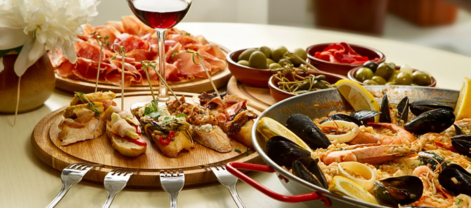

Land of the siesta, daily life in Spain moves slowly and runs until late. Many travelers can get frustrated at the limited store hours and seemingly laid back pace of life. But it's this Spanish perspective, move slowly, enjoy yourself, eat well, and relax, which gives the country so much character. Spain is a beautiful, interesting, and dynamic country. Madrid and Barcelona are hip and energetic cities. Visit Granada for a Moorish touch. Visit the beautiful Basque Country in the north and get off the beaten track. Valencia is a great port town that heaves with crowds during the August tomato throwing festival in Bunol. Take a quick jaunt to the Canary Islands or Ibiza. The list goes on. Spain is a lovely and diverse country and, unlike other Western European countries, will be a lot kinder to your budget.
On a scale of 1 to 10, Spain's cuisine rates a 10. There seems to be an infinite variety of food, with variations in every region. You can eat at very inexpensive places and still have a great meal. The menu of the day option is fantastic because it offers a complete meal for a bargain
There are really few places in the world that can compare with Spain on food. Spanish food is characterized by its freshness and healthfulness. The home made food found in many humble restaurants beats the most expensive food served in the most expensive restaurants of the world for taste and originality. A common laborer in Spain can eat like a king!